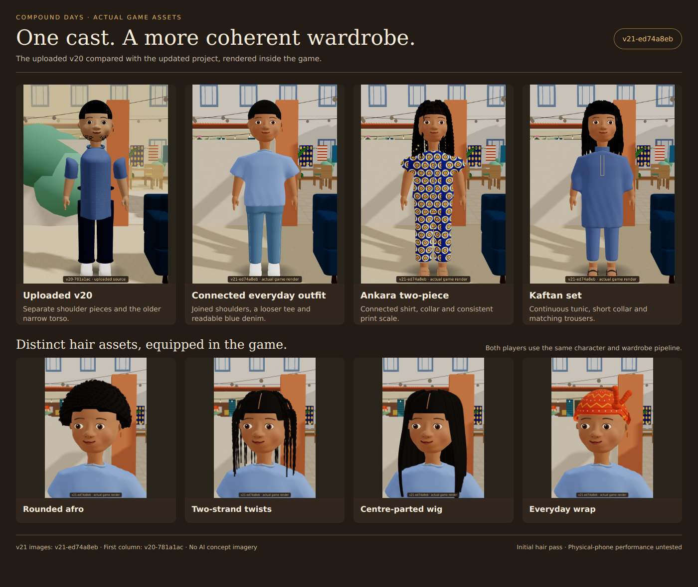

Compound Days · v21-ed74a8eb
Actual equipped models and game scenes. Review cameras/positions are staged for inspection. Walking images are captured animation poses. The comparison's first column is labelled as the older v20 source; all other captures are this v21 build.
Implementation notes and limitations · Gameplay checks · Touch emulation checks · glTF validation

Three outfits · turnarounds and walk poses
Hair and headwear · front and back
The game and veranda
Creator and touch layouts